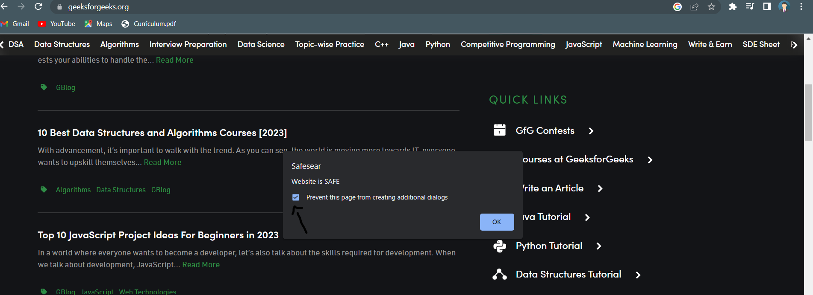

Safesear
How do I can use Safesear?
- First Go to our website, scroll down and click on the download button.
- One zip file will be downloaded into your system, Extract it.
- Now,Launch your Google Chrome > Go to Extensions > Click manage extension option > Enable Developer Mode
- Click on Load Packed button, and select the extracted folder
- Now Search for any website.
- If you want to prevent to generate dialogue box for safe websites, you can click on the prevention option on the dialogue box.

- You can check it for malicious website here.
- You can block detected malicious website by clicking on extension icon as shown below.
- Click on that extension icon one pop-up page will be displayed, click on Block Ip button
- As you can see Website got blocked.
- If you want to again unblock the detected malicious website so you can follow the same procedure as followed Block Ip address,
just click on Unblock Ip button, and reload the page.